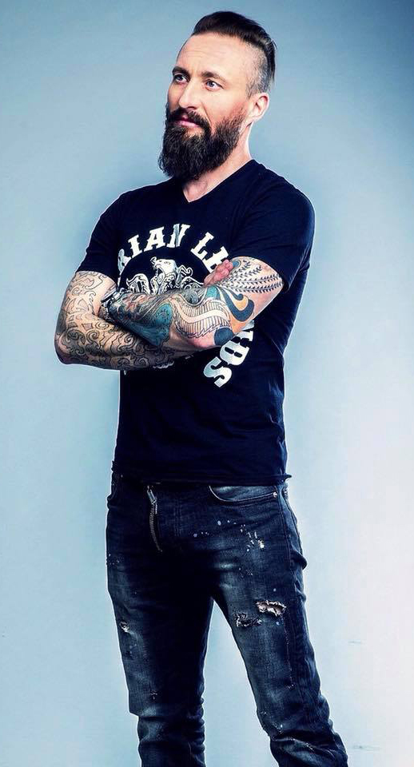
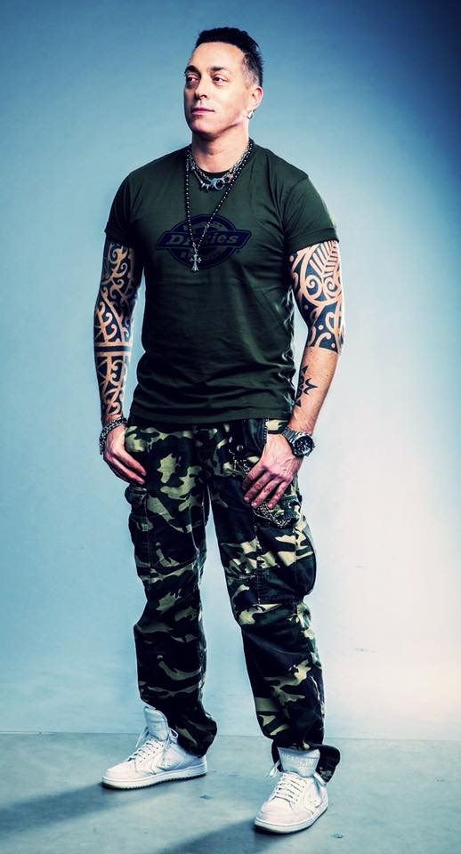
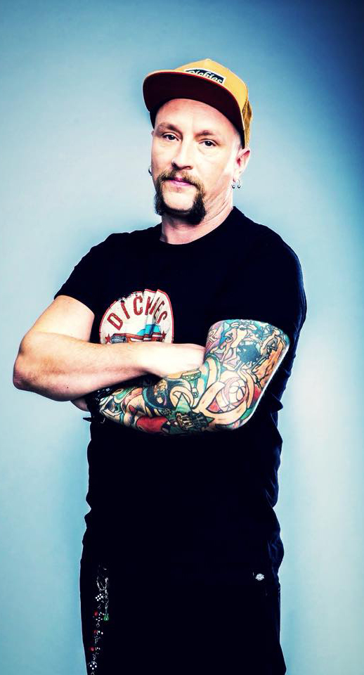
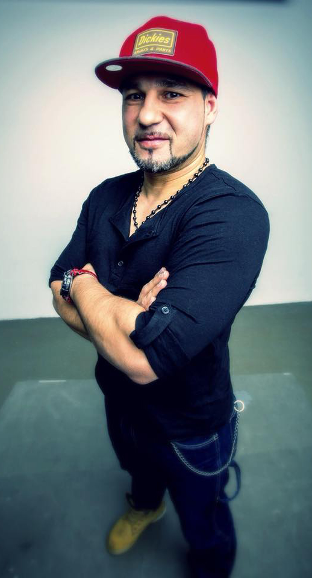
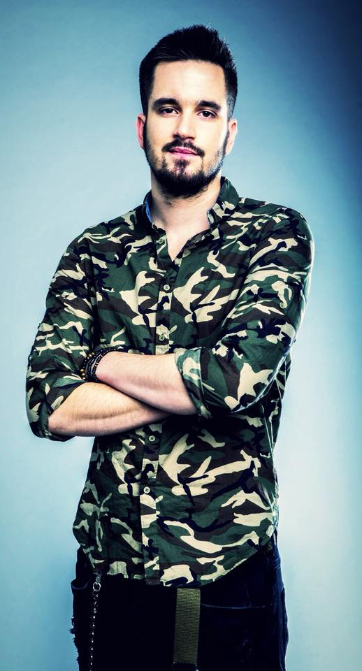
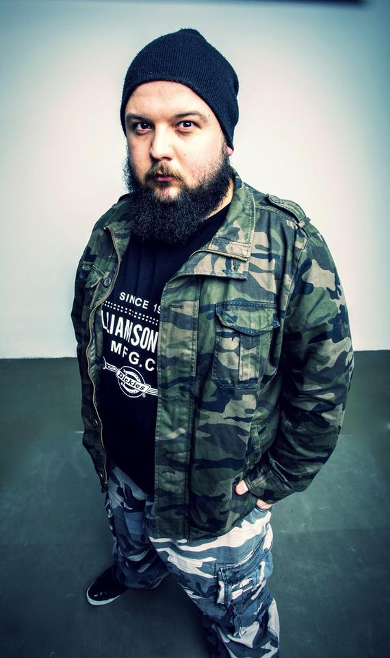

|
Kezdőoldalra
|
|

Balázs Gyula - Kowalsky (ének) A zenekar frontembere 1999-ben alapította a Vegát jó barátja, Jávorszky Béla tanácsai alapján. A zenekar első lemeze, Pimasz Grimasz címmel pedig 2003-ban jelent meg – ami eredetileg egyébként szólóalbumnak készült. A különböző vallások és egyéb spirituális témák iránt érdeklődő Kowa fontosnak tartja, hogy a Vega zenéje fontos mondanivalót közvetítsen a nagyvilág számára, de mégis könnyed, emészthető formában tegye azt. Néhány kivétellel valamennyi zenekari dal szövegét ő szerezte. Kedvenc énekese Everlast (Erik Francis Schrody), a kedvenc zenekarai közé pedig az Alice in Chains, Zombie, Metallica, a Depeche Mode, és a Linkin Park tartoznak. Kedvenc írói Kahlil Gibran, ezen kívül pedig olyan művek tettek mély benyomást rá, mint a Bhagavad Gita, a Sri Isopanisad vagy a Dei Gloria Intacta, Jan van Rijckenborgh-tól Kowa a zenélés mellett jógával foglalkozik, de korábban három könyvet írt és több képet is festett. Családi állapota nős, egy lány- és három fiúgyermek édesapja. |
|---|
|

Szórád Csaba - Jimmy (basszusgitár) Jimmy 2005-ben csatlakozott a Vegához, ám a Kowával való ismerettsége már jóval korábbra nyúlt vissza. A csapat basszusgitárosa ugyanis 1999-ben az előző zenekarával, az Árnyakkal járta az országot Kowalsky akkori bandájának, a Black-Out előzenekaraként. Jimmy zenei karrierjét szülővárosában, Jászberényben kezdte egy zeneiskolában, de először fúvóshangszeren tanult. A helyzeten sokat segített, hogy édesapja A-kategóriás basszusgitáros volt, így nem is volt kérdés, hogy Jimmy is a gitárok iránt fog érdeklődni. A hangszeresek főnöke egy röpke új-zélandi kitérőt követően vált a Vega basszusgitárosává, az első koncertjére pedig mintegy kétezer ember előtt került sor a Zöld Pardonban. Azóta védjegyévé vált a sportszár viselése, ami 2014-től aranyszínű lesz a Forradalmakon. Kedvenc száma az Utolsó tangó, a Szabad rég, a Jövünk mint a hunok és a Darsan. |
|

Vajda Péter - Sóder (dobok) A Vega dobosa, Sóder 2008-ban csatlakozott a bandához. Soci ekkor már tapasztalt zenésznek tudhatta magát, hiszen korábban játszott a Kerozin nevű formációban, majd ő lett a Tankcsapda dobosának, Fejes Tamás roadja. Sóder már gyerekkorában közel került a zenéhez, miután édesapja profi zongorista. Hatévesen próbálta ki a dobolást, amit egyből megszeretett. Zenei tanulmányait Debrecenben, a Rocksuliban folytatta, később pedig tanárként is dolgozott az iskolában. A Vegába Jimmy hívására került be, s néhány hónap próbálást követően 2008 januárjában már ő állt színpadra a csapattal. Első koncertjére Miskolcon került sor, ami saját bevallása szerint “rendkívüli élmény volt”, s nagyon jól érezte magát. Soci a koncerteken Gretsch USA custom dobon játszik, 2014 óta pedig Zildjian cintányérgyártó cég hivatalos endorzere. Mindezeket pedig Artbeat dobverőkkel püföli, amit a cég egyedileg gyárt neki, és amit bárki megvásárolhat a zenekar hivatalos webshopjában. |
|

Vidák Róbert - More (gitár, vokál) A banda legbohémebb tagja 2011 tavaszán csatlakozott Kowáékhoz akusztikus gitárosként. Robi különleges flamencostílusa üdítően hatott a zenekar hangzásvilágára. A gitározás mellett a zeneszerzésben is aktív csapattagról van szó: a Vega hatodik nagylemezén, az “Évtized lemezére” hallgató korongon társ-producerként is dolgozott, továbbá négy szám alapját ő szerezte a Kowalsky és Fanka által megálmodott Expedíció lemezen. Érdekesség, hogy a zenészcsaládból származó Robi először hegedülni tanult, a gitárral csak később ismerkedett meg. A flamencostílust Spanyolországban, teljesen egyedül sajátította el. Magyarországra visszatérve először bárokban, majd színházakban játszott – a gitárkíséretek mellett pedig színdarabokhoz írt zenéket. A legnagyobb kedvencei Sting, Pavarotti, Chris Cornell (Sound Garden). A kedvenc Vega-száma a Nem igaz, saját elmondása szerint a számára ez a dal “kissé furcsa”, de személyes élmények miatt a Csiszolatlan gyémántok is előkelő helyet foglal el a listáján. |
|

Tobak Dániel (akusztikus gitár, vokál) Dani, a zenekar legfiatalabb és legfrissebb tagja 2016-ban került be a bandába. Előtte is kapcsolatban állt a srácokkal, mivel egy évig dolgozott gitár technikusként a zenekarnál, a taggá válás előtt. Kis kora óta jelen van életében a zene, édesapja hatására kezdett gitározni, majd hat évig klasszikus zenét tanult szülővárosában, Tapolcán. Majd 18 évesen, mikor felkerült Budapestre, az akkor nyíló Budapesti Rocksuli diákjaként folytatta a zenetanulást, ahol a zenekarból először Socival ismerkedett meg. Itt egyébként 2016 eleje óta gitároktatással is foglalkozik. Legnagyobb kedvencei Joe Satriani, Richie Kotzen, a Metallica és a Red Hot Chili Peppers. |
|

Szebényi Dániel (billentyűk, vokál) Danit 2017 nyarán kereste meg Kowa, elsősorban a 15 éves jubileumi Aréna koncert kapcsán és kérte fel, hogy csatlakozzon a zenekarhoz. Dani akkor is épp egy vízparton üldögélt, hisz 16 éves kora óta folyamatosan koncertezik – több európai, észak-amerikai turnén vett részt (kb. 40 különböző országban) magyar és külföldi zenekarokkal. Öt éves korában kezdett el zenélni, amit több irányból közelített meg – klasszikus zongora, klasszikus orgona, jazz, pop, rock és elektronikus zenék, illetve dalszerzéssel, hangszereléssel is foglalkozik több műfajban. Fiatalon országos zenei versenyeken indult (orgona, klasszikus és jazz zongora), ahol mindig az első három helyezés valamelyikén végzett. Közreműködött (mint szerző vagy előadó) több magyar nagylemez, single és magyar rádiólistavzető vagy listás dalokban. Sci-fi, Fantasy könyv és filmrajongó (Star Wars, Asimov, Tolkien, Warhammer és Warhammer40k, Az éj és hajnal trilógiája), szereti a terepjárókat, az off-road kultúrát, és kipróbálta már magát lőtéren is. Van egy chow-chow kutyusa, akit Aragornnak hívnak. A Kowalsky meg a Vega munkásságát szinte az elejétől kezdve követte, több koncertet is meglátogatott, ismerte a lemezeket és párszor találkozott is Kowával különböző fesztiválokon vagy koncerteken. A hasonló zenei ízlés mellett az egyik legfontosabb dolognak számára az önazonos szöveg és gondolati világ, na meg azt, hogy az első perctől fogva megvan a közös hangnem. Mind a zeneiségben, mind magánemberekként. |
| Kezdőoldalra |